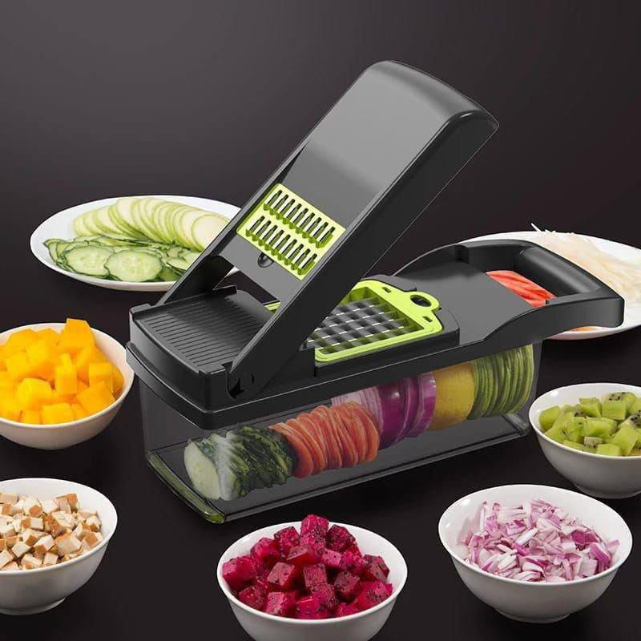
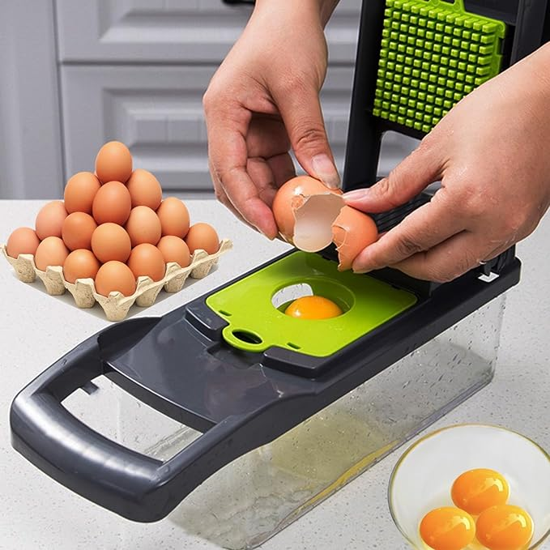
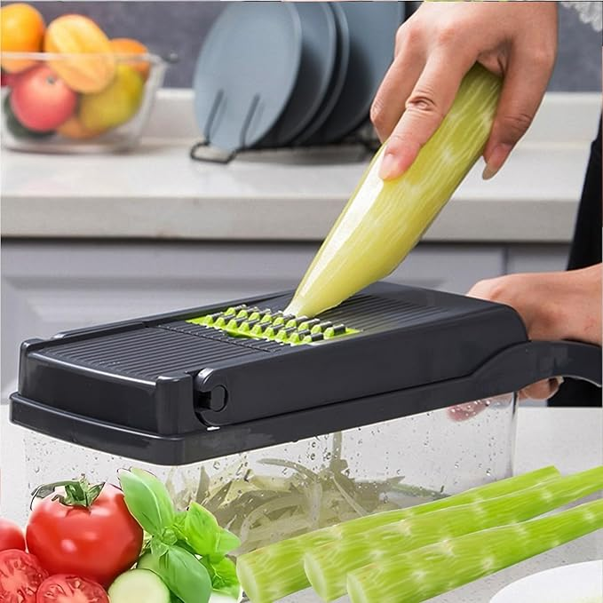
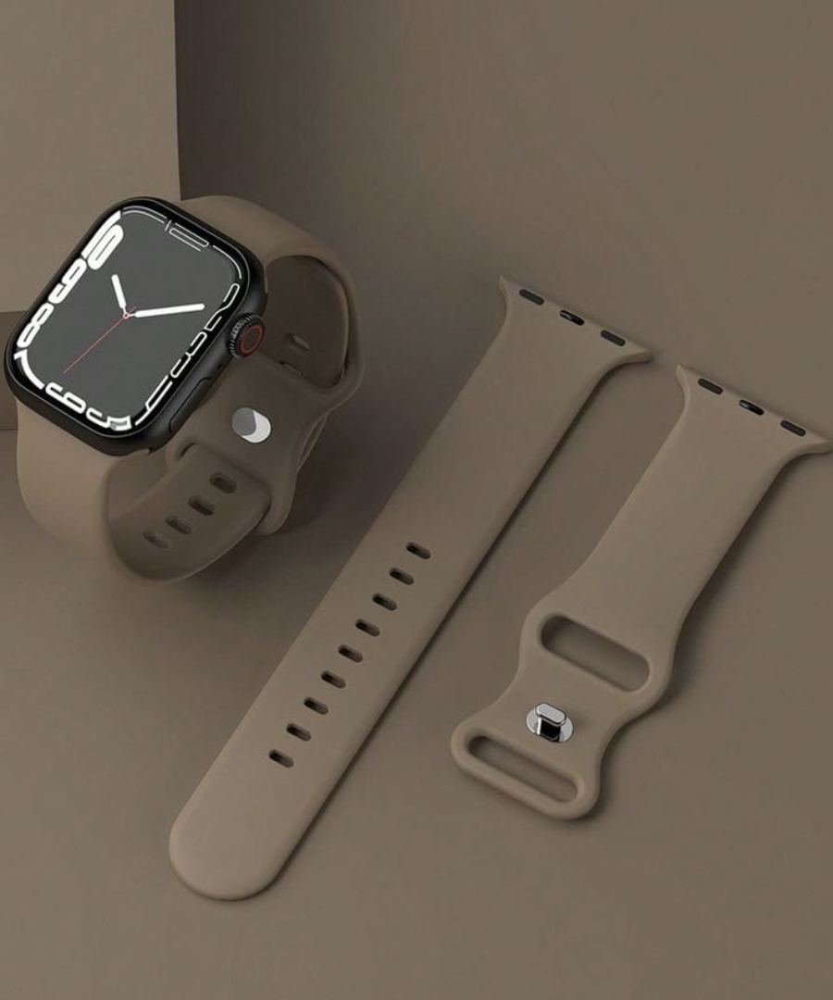
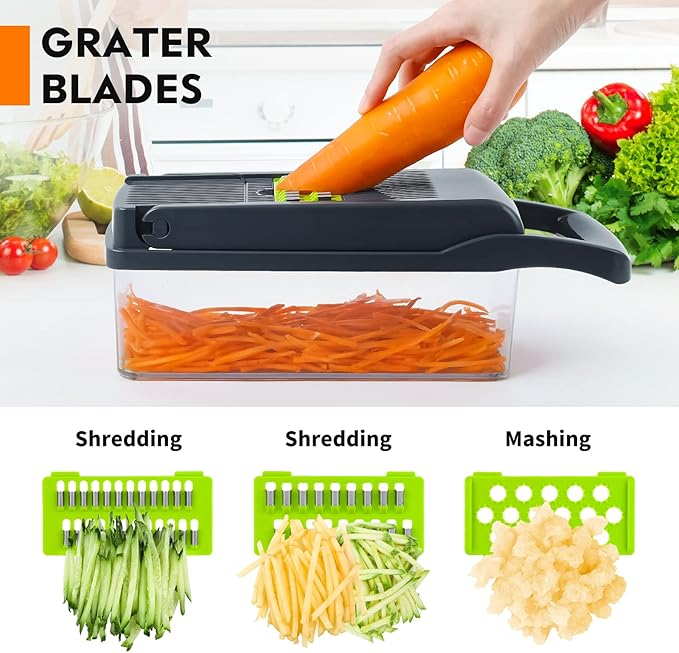
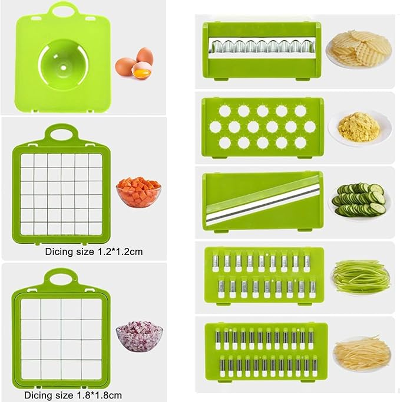
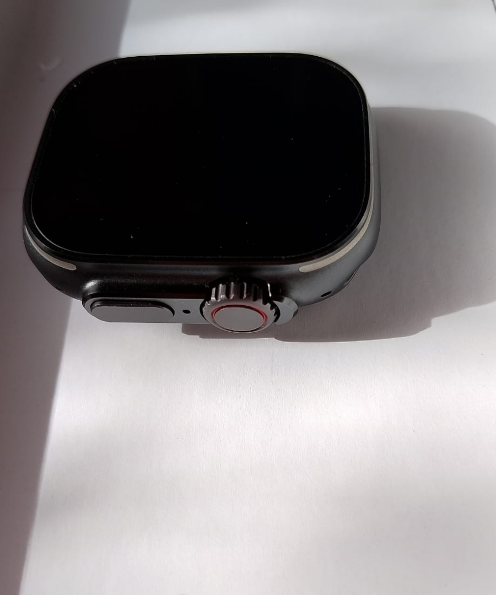
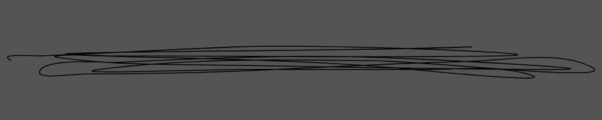
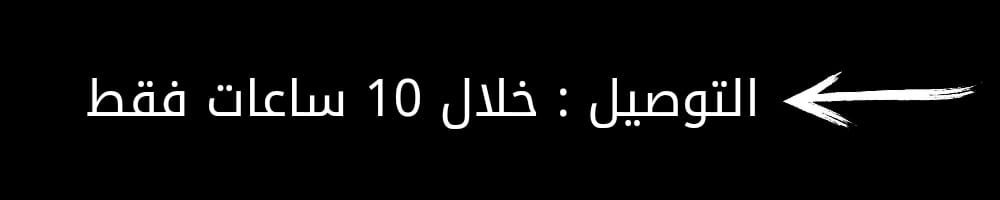

لمع يومنا بضوء تواجدك
المواصفات العامة
- الخامة: بلاستيك + ستانلس ستيل مقوى
- عدد الشفرات: 12 قطعة مختلفة
- الاستخدام: تقطيع، بشر، فرم، وسحق
- سعة الحاوية: 1.5 لتر
- الأمان: غطاء حماية ضد القطع
- التنظيف: سهل التنظيف ومناسب لغسالة الصحون
- مقاس الجهاز: 27x11x13 سم
- اللون: رمادي وأسود
- التخزين: تصميم قابل للطي لتوفير المساحة
- الاستخدام الآمن: قاعدة مانعة للانزلاق
- بلد التصنيع: الصين بجودة عالية
- الضمان: ضمان استبدال خلال 14 يوم 
الاستلام:
350جنيه
تستخدم يومياً لتوفير ساعتين من وقتك في المطبخ ⏱️
الوصول: جاهز خلال 10 ثواني فقط 🕙
التوصيل: التوصيل مجاني 🚚
- تتميز القطاعة بـ 12 شفرة حادة لتقطيع جميع أنواع الخضار والفاكهة بكل سهولة 🥕🍅
- مناسبة لتقطيع: الجزر، البطاطس، الخيار، البصل، الطماطم، الفلفل، الكوسة، وحتى الفواكه 🍏
- تصميم آمن: الغطاء يحمي يدك من الجروح أثناء الاستخدام 🧤
- قاعدة مانعة للانزلاق تمنع تحركها أثناء التقطيع ⚙️
- يمكن غسلها بالكامل في غسالة الصحون 🧼
- كل القطع قابلة للفك والتركيب بسهولة
- حجم الحاوية الكبير يسع كمية تكفي لتحضير وجبة كاملة
- خامات عالية الجودة مقاومة للكسر والصدأ
- تساعدك في تحضير الطعام بـ سرعة خرافية
- تحافظ على نظافة مطبخك بدون فوضى
- تحافظ على نظافة مطبخك بدون فوضى
- تقطع الخضار بشكل موحد لعرض أنيق للأكل
- توفر أكثر من 3 ساعات أسبوعياً.
- شكل أنيق يناسب ديكور المطبخ العصري
- سهلة التخزين: بتتفك وتتحط في أي درج